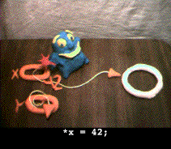
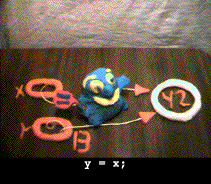

Binky Pointer Fun Video
Stanford CS Education Library: Pointer Fun With Binky -- a fun 3 minute
video that explains the basics features of pointers and memory.
10 second preview (770k)
|
Full video
The full video is 3 minutes long and comes in two sizes -- small (300 x
320, 14 Megabytes) and large (640 x 480, 34 Megabytes). There are different
versions of the video customized to use the syntax of various languages...
The video will open in its own window and it should "stream", so you can
watch it as it downloads. Alternately, you can option-click the link to
save the video file locally, and then play it with a video player application
(Quicktime Player, Windows Media Player, ...). |
The Stanford CS Education Library
contains lots of other useful CS Materials...

There is a 6-page companion
document which presents the concepts and code from the video along
with study questions and solutions. For the curious, there is a a brief
history of how
Binky was made.
Formats and Logistics
The video is in the AVI format which seems to be the most cross-platform.
The Quicktime player and the Windows Media Player both understand AVI,
and it works on Unix too. The MIME type of AVI is video/avi (the
older variants are video/x-msvideo or video/msvideo).
You can let your browser plug-in play the video in a browser window,
or save the AVI file and play it with a dedicated video playing application
(Quicktime Movie Player or Microsoft Video Player). To download the movie
file from your browser, you typically right-click, option-click, or click-hold
on the URL, and it will let you save the file locally. Alternately on my
version of Netscape (4.5, Mac), the QuickTime plug-in has a "save movie
file in cache" option, so after watching the movie you can go to your browser
cache and pull the movie out.
Quicktime may be obtained here.
Uses
Anyone can use the video to amuse themselves and review the basics of the
pointers -- but only for about 3 minutes! A more likely use of the video
is as a fun little segment integrated in to a first or second lecture on
pointers.

Redistribution
As with all materials in the CS Education Library, you have almost unlimited
rights to copy and redistribute this content. The only restriction is that
the material must be reproduced with its copyright legend: "This is document
104 in the Stanford CS Education Library. Please see http://cslibrary.stanford.edu/
for this and other free educational materials. Copyright Nick Parlante
1999."
Frequently Asked Questions
How can you have a pointer video in Java when Java doesn't have pointers?
Well they may be called "references", but essentially they are pointers,
at least for the basic material in this video. What Java is missing is
pointer address arithmetic, but the video does not mess around with that
level. It just examines the fundamental structures of pointers, dereferencing
and assignment -- Java has all of those in the basically the same way that
C, C++ and Pascal do. The fact that Java has the NullPointerException
suggests that somebody thinks it has pointers!
What's this "pointee" stuff?
Sadly, there is no established word for "the thing the pointer points to".
Across different languages and situations, there's a great variety in the
type of thing that pointers can point to. Unfortunately you really need
a term for "the thing the pointer points to" to write simple descriptions
of pointer structures. So I use the word "pointee" for "the thing the pointer
points to", and I try to only make statements about "pointers" and "pointees"
which are true across all different languages and situations.
Postscript
I hope you enjoy this material in the spirit of goodwill in which it is
given. Thanks to Stanford Universirty and Eric Roberts for giving me the
opportunity to create things like this. Someday I may seek out real funding
for the CS Ed Library.
Cheers,
Nick Parlante
nick.parlante@cs.stanford.edu
Up to the Stanford CS Education
Library home